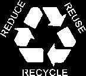
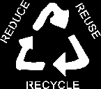
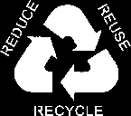

Dumpster Diving/Recycling Stencils



The Dumpster Lady's FAQ
Freegan.info
(*Stencil Punks does not endorse
eating out of dumpsters. if you want to reclaim
waste, thats one thing but eating garbage
food in our opinion is unhealthy and disgusting)